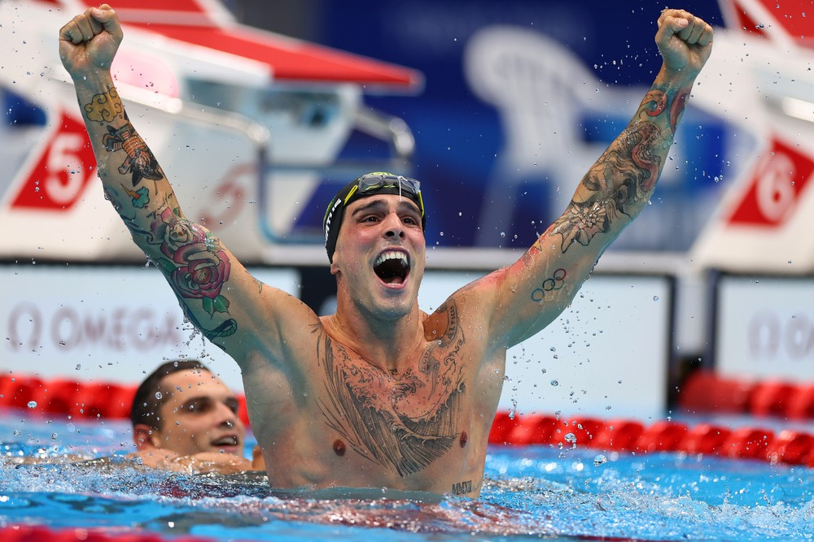
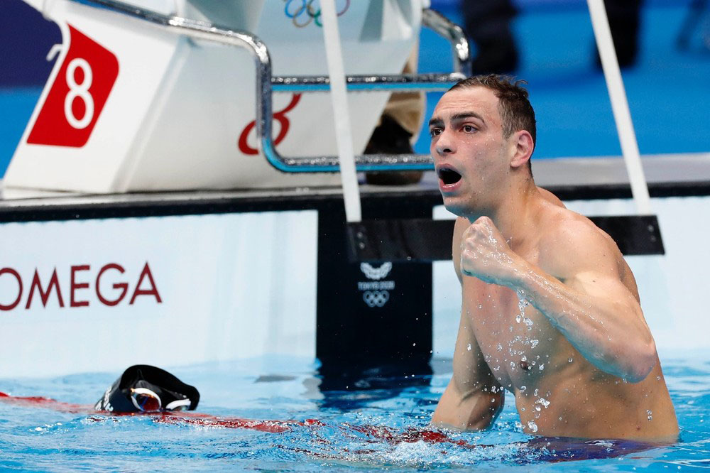

Modo Escuro
 Rebeca Andrade é ouro nas Olimpíadas - Foto: Ricardo Bufolin/Panamerica Press/CBG
Rebeca Andrade é ouro nas Olimpíadas - Foto: Ricardo Bufolin/Panamerica Press/CBG
Rebeca salta para a história
Depois da prata no individual geral, volta a subir no pódio e conquista sau segunda medalha nos jogos. Rebeca
é a primeira brasileira a ganhar duas medalhas em uma edição nos jogos.

Bruno Fratus comemora bronze - Foto: REUTERS/Marko Djurica
Enfim, medalhista olímpico!
Fratus faz história, conquista o bronze e dá ao país 4º medalha na história dos 50m livre nas Olimpíadas.
 Luisa Stefani e Laura Pigossi - Foto: REUTERS
Luisa Stefani e Laura Pigossi - Foto: REUTERS
Bronze como ouro
Após semana intensa nas Olimpíadas de Tóquio 2020, dupla brasileira comemora medala olímpica inédita: "não
consigo acreditar ainda no que a gente conseguiu".
 Rebeca Andrade é prata nas Olimpíadas - Foto: Ricardo Bufolin/CBG
Rebeca Andrade é prata nas Olimpíadas - Foto: Ricardo Bufolin/CBG
Pode vir mais por aí
Depois de conquistar a prata no individual geral, Rebeca Andrade volta a competir em busca da segunda conquista nas
Olimpíadas de Tóquio.
 Mayra Aguiar com a medalha de bronze - Foto: REUTERS/Sérgio Perez
Mayra Aguiar com a medalha de bronze - Foto: REUTERS/Sérgio Perez
É bronze!
Brasieira vence sul-coreana Hyunji Yoon por ippon com imobilização e conquista terceira medalha olímpica da
carreira.
 Ítalo Ferreira - Foto: REUTERS/Lisi Niesner
Ítalo Ferreira - Foto: REUTERS/Lisi Niesner
Entrou para a história
O feito histórico de Ítalo Ferreira, ao conquistar a primeira medalha de ouro do surfe das olimpíadas, trouxe
grandes nomes da modalidade a repercutirem esse marco.

Fernando Scheffer comemora medalha de bronze nos 200m livres - Foto: Satiro Sodré/SSPress/CBDA
Parece que estou sonhando
Scheffer se surpreende nos 200m livre e coloca o país no pódio em prova que Gustavo Borges fez história em
Atlanta-1996 em 14º medalha olímpica para o país na modalidade.
 Rayssa Leal faz manobra na final - Foto: Ezra Shaw/Getty Images
Rayssa Leal faz manobra na final - Foto: Ezra Shaw/Getty Images
A fadinha encantou
Rayssa Leal faz história e é prata no skate street nas olimpíadas de Tóquio. Maranhense de 13 anos faz grande
prova e é superada apenas por japonesa.